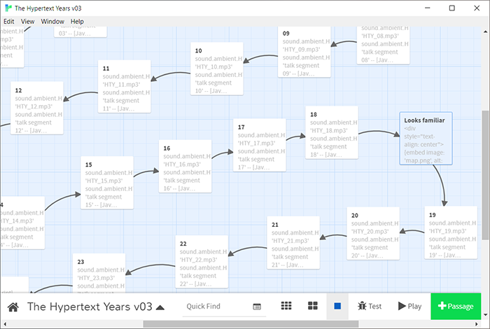

The Hypertext Years
Stuart Moulthrop

I begin with an admittedly strange notion – that three and a half decades of recent history, 1985-2020, can be called the hypertext years, as if this technology has some explanatory power for the time in question. We could of course just as easily think of this period as the golden age of popular computing, or the heyday of cellular communication, or of cable television, or maybe more obviously the Before Times; but I want to try the virtue of perversity.
Calling out hypertext instead of Twitter, Web 2.0, or technoculture generally, may look decidedly foolish, and there is plenty of folly in the record. The early hypertext years were not a good time for predictions. "Hypertext will help us with a great task of our time," wrote one tech commentator in 1987. Linked information would help in "judging what lies ahead, adjusting our thinking to prospects that shake the foundations of established worldviews. Hypertext will strengthen our foresight" (Drexler). These remarks were offered toward the end of a book extolling nanotechnology. Now of course we live in mortal dread of very small replicators. While our highly imperfect hypertext system, the World Wide Web, arguably did strengthen scientific foresight ahead of the virus crisis, other communication technologies have made the situation worse. The inevitable judgement on "foresight" is not Black Twitter but its Orange counterpart, a potent vector of ignorance, denial, and risk.
Reading technology as text means examining the mediated emergence of meaning. This work may lead us to propose new rhetorics, as George Landow did foundationally for hypertext. We may have recourse to pattern language, as Mark Bernstein has memorably done (Patterns), or to the procedural rhetorics proposed by Ian Bogost (Persuasive Games) and Mary Flanagan (Critical Play). We may be drawn, as I always am, to Espen Aarseth's notion of the ergodic, understanding discourse, narrative or otherwise, as a path chosen from a range of possibilities, the traversal of a graph or network (Cybertext).
This work—simultaneously essay, talk, and hypertext built in Twine—explores these possibilities in form and theory.
About the Author
Stuart Moulthrop
Stuart Moulthrop is Distinguished Professor of English at the University of Wisconsin-Milwaukee. His digital fictions in the 1990s and early 2000s were instrumental to cybertext theory and have been assigned to the "golden age" of electronic writing. He was a founding board member of the Electronic Literature Organization in 1999 and continues as part of that community. Between 2003 and 2010 Moulthrop helped build programs in digital design at the University of Baltimore. In Milwaukee Moulthrop is co-PI of the Digital Cultures Collaboratory, a joint project of faculty, staff, and graduate students supporting the Serious Play live streaming channel on Twitch.tv. He has collaborated with Dene Grigar on Traversals (MIT Press, 2017), concerning the preservation of early electronic literature, and with Anastasia Salter on Twining (Amherst College Press, 2021), a combined critical/creative exploration of the Twine writing tool. With Salter, he is co-editor of the book series Electronic Communities of Play, also from Amherst.